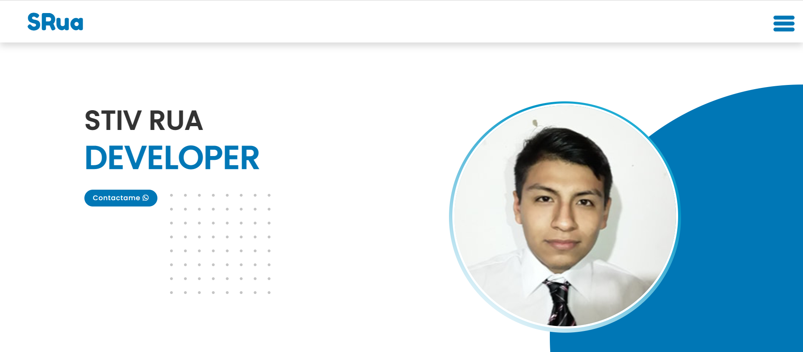
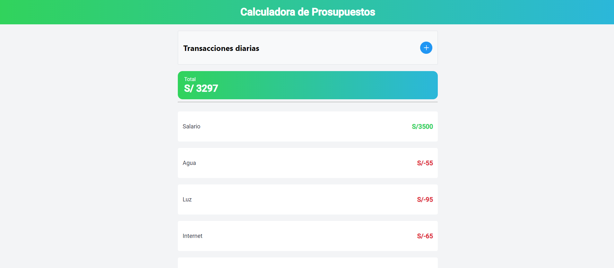
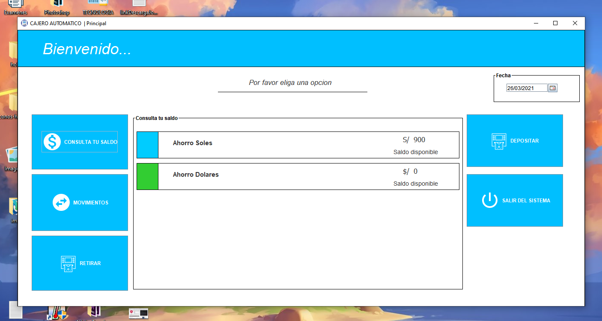

<section id="proyectos" class="proyectos">
    <div class="container-fluid animate__animated animate__fadeIn">
        <h1 class="text-center sub-title">PROYECTOS</h1>
        <div class="wrapper">
            <div class="grid">
                <div class="cards">
                    
                    <p class="title">PORTAFOLIO</p>
                    <p class="description">El portafolio online es un espacio virtual en el que puedes consignar todos los detalles sobre tu formación</p>
                    <ul class="project-list">
                        <li class="angular">Angular <i class="fab fa-angular fa-2x"></i></li>
                        <li class="html">HTML <i class="fab fa-html5 fa-2x"></i></li>
                        <li class="css">CSS <i class="fab fa-html5 fa-2x"></i></li>
                    </ul>
                    <div class="options">
                        <a href="https://github.com/stiv-developer/portafolio-stiv"><i class="fab fa-github fa-2x"></i></a>
                    </div>
                </div>
                <div class="cards">
                    
                    <p class="title">CALCULADORA DE PRESUPUESTO</p>
                    <p class="description">Para ordenar sus finanzas, lo primero es realizar un presupuesto mensual para saber con claridad cuáles sus ingresos y gastos reales.</p>
                    <ul class="project-list">
                        <li class="angular">Angular <i class="fab fa-angular fa-2x"></i></li>
                        <li class="html">HTML <i class="fab fa-html5 fa-2x"></i></li>
                        <li class="css">CSS <i class="fab fa-html5 fa-2x"></i></li>
                    </ul>
                    <div class="options">
                        <a href="https://github.com/stiv-developer/calculadoraProsupuesto"><i class="fab fa-github fa-2x"></i></a>
                        <a href="https://suspicious-bardeen-23e550.netlify.app/"><i class="fas fa-external-link-alt fa-2x"></i></a>
                    </div>
                </div>
                <div class="cards">
                    
                    <p class="title">MINI CAJERO AUTOMATICO</p>
                    <p class="description">Un cajero automático está compuesto por subsistemas electrónicos con controladores industriales</p>
                    <ul class="project-list">
                        <li class="java">Java </li>
                    </ul>
                    <div class="options">
                        <a href="https://github.com/stiv-developer/cajero_automatico"><i class="fab fa-github fa-2x"></i></a>
                    </div>
                </div>
            </div>
        </div>
    </div>
</section>